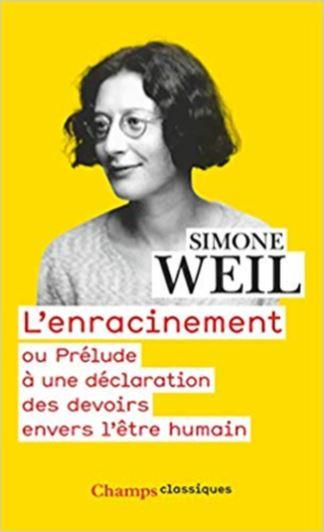
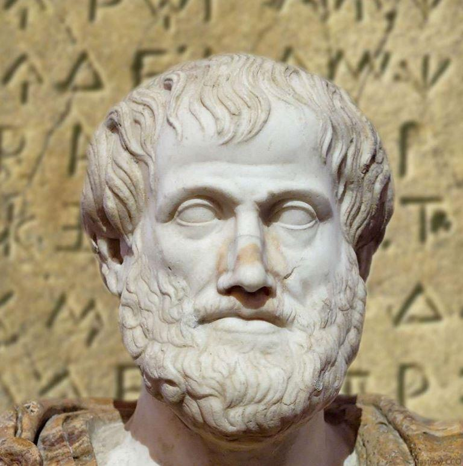

Extrait tiré du livre l’Enracinement, Prélude à une déclaration des devoirs envers l’être humain, de Simone Weil, paru en 1943.
L’auteur y développe les idées dont l’application lui semble être le meilleur moyen d’accéder à une vie sociale saine et pérenne. Dans la première partie du livre, les besoins de l’âme, au paragraphe sur la vérité, voici ce qu’elle dit à propos notamment de l’activité journalistique :
« Le besoin de vérité est plus sacré qu’aucun autre. Il n’en est pourtant jamais fait mention. On a peur de lire quand on s’est une fois rendu compte de la quantité et de l’énormité des faussetés matérielles étalées sans honte, même dans les livres des auteurs les plus réputés. On lit alors comme on boirait l’eau d’un puits douteux.
Il y a des hommes qui travaillent huit heures par jour et font le grand effort de lire le soir pour s’instruire. Ils ne peuvent pas se livrer à des vérifications dans les grandes bibliothèques. Ils croient le livre sur parole. On n’a pas le droit de leur donner à manger du faux.
Quel sens cela a-t-il d’alléguer que les auteurs sont de bonne foi ? Eux ne travaillent pas physiquement huit heures par jour.
La société les nourrit pour qu’ils aient le loisir et se donnent la peine d’éviter l’erreur. Un aiguilleur cause d’un déraillement serait mal accueilli en alléguant qu’il est de bonne foi. À plus forte raison est-il honteux de tolérer l’existence de journaux dont tout le monde sait qu’aucun collaborateur ne pourrait y demeurer s’il ne consentait parfois à altérer sciemment la vérité.
Le public se défie des journaux, mais sa défiance ne le protège pas. Sachant en gros qu’un journal contient des vérités et des mensonges, il répartit les nouvelles annoncées entre ces deux rubriques, mais au hasard, au gré de ses préférences. Il est ainsi livré à l’erreur.
Tout le monde sait que, lorsque le journalisme se confond avec l’organisation du mensonge, il constitue un crime. Mais on croit que c’est un crime impunissable. Qu’est-ce qui peut bien empêcher de punir une activité une fois qu’elle a été reconnue comme criminelle ? D’où peut bien venir cette étrange conception de crimes non punissables ? C’est une des plus monstrueuses déformations de l’esprit juridique.
Ne serait-il pas temps de proclamer que tout crime discernable est punissable, et qu’on est résolu, si on a en l’occasion, à punir tous les crimes ?
Quelques mesures faciles de salubrité publique protégeraient la population contre les atteintes à la vérité.
La première serait l’institution, pour cette protection, de tribunaux spéciaux, hautement honorés, composés de magistrats spécialement choisis et formés. Ils seraient tenus de punir de réprobation publique toute erreur évitable, et pourraient infliger la prison et le bagne en cas de récidive fréquente, aggravée par une mauvaise foi démontrée.
Par exemple un amant de la Grèce antique, lisant dans le dernier livre de Maritain : « les plus grands penseurs de l’antiquité n’avaient pas songé à condamner l’esclavage », traduirait Maritain devant un de ces tribunaux. Il y apporterait le seul texte important qui nous soit parvenu sur l’esclavage, celui d’Aristote. Il y ferait lire aux magistrats la phrase : « quelques-uns affirment que l’esclavage est absolument contraire à la nature et à la raison ». Il ferait observer que rien ne permet de supposer que ces quelques-uns n’aient pas été au nombre des plus grands penseurs de l’antiquité.
Le tribunal blâmerait Maritain pour avoir imprimé, alors qu’il lui était si facile d’éviter l’erreur, une affirmation fausse et constituant, bien qu’involontairement, une calomnie atroce contre une civilisation tout entière. Tous les journaux quotidiens, hebdomadaires et autres, toutes les revues et la radio seraient dans l’obligation de porter à la connaissance du public le blâme du tribunal, et, le cas échéant, la réponse de Maritain. Dans ce cas précis, il pourrait difficilement y en avoir une.
Le jour où Gringoire publia in extenso un discours attribué à un anarchiste espagnol qui avait été annoncé comme orateur dans une réunion parisienne, mais qui en fait, au dernier moment, n’avait pu quitter l’Espagne, un pareil tribunal n’aurait pas été superflu. La mauvaise foi étant, dans un tel cas, plus évidente que deux et deux font quatre, la prison ou le bagne n’auraient peut-être pas été trop sévères.
Dans ce système, il serait permis à n’importe qui, ayant reconnu une erreur évitable dans un texte imprimé ou dans une émission de la radio, de porter une accusation devant ces tribunaux.
La deuxième mesure serait d’interdire absolument toute propagande de toute espèce par la radio ou par la presse quotidienne. On ne permettrait à ces deux instruments de servir qu’à l’information non tendancieuse.
Les tribunaux dont il vient d’être question veilleraient à ce que l’information ne soit pas tendancieuse.
Pour les organes d’information ils pourraient avoir à juger, non seulement les affirmations erronées, mais encore les omissions volontaires et tendancieuses.
Les milieux où circulent des idées et qui désirent les faire connaître auraient droit seulement à des organes hebdomadaires, bi-mensuels ou mensuels. Il n’est nullement besoin d’une fréquence plus grande si l’on veut faire penser et non abrutir.
La correction des moyens de persuasion serait assurée par la surveillance des mêmes tribunaux, qui pourraient supprimer un organe en cas d’altération trop fréquente de la vérité. Mais ses rédacteurs pourraient le faire reparaître sous un autre nom.
Dans tout cela il n’y aurait pas la moindre atteinte aux libertés publiques. Il y aurait satisfaction du besoin le plus sacré de l’âme humaine, le besoin de protection contre la suggestion et l’erreur.
Mais qui garantit l’impartialité des juges ? objectera-t-on. La seule garantie, en dehors de leur indépendance totale, c’est qu’ils soient issus de milieux sociaux très différents, qu’ils soient naturellement doués d’une intelligence étendue, claire et précise, et qu’ils soient formés dans une école où ils reçoivent une éducation non pas juridique, mais avant tout spirituelle, et intellectuelle en second lieu. Il faut qu’ils s’y accoutument à aimer la vérité.
Il n’y a aucune possibilité de satisfaire chez un peuple le besoin de vérité si l’on ne peut trouver à cet effet des hommes qui aiment la vérité ».
Partager cette page